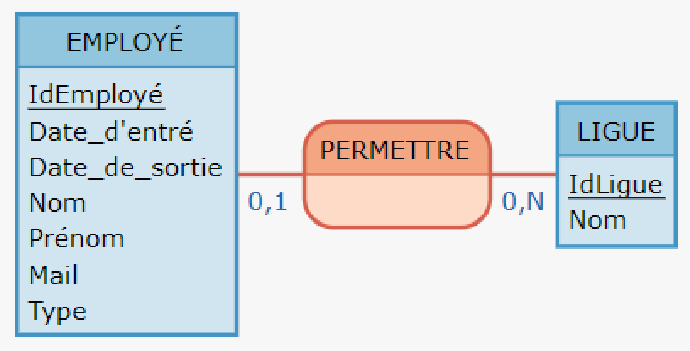
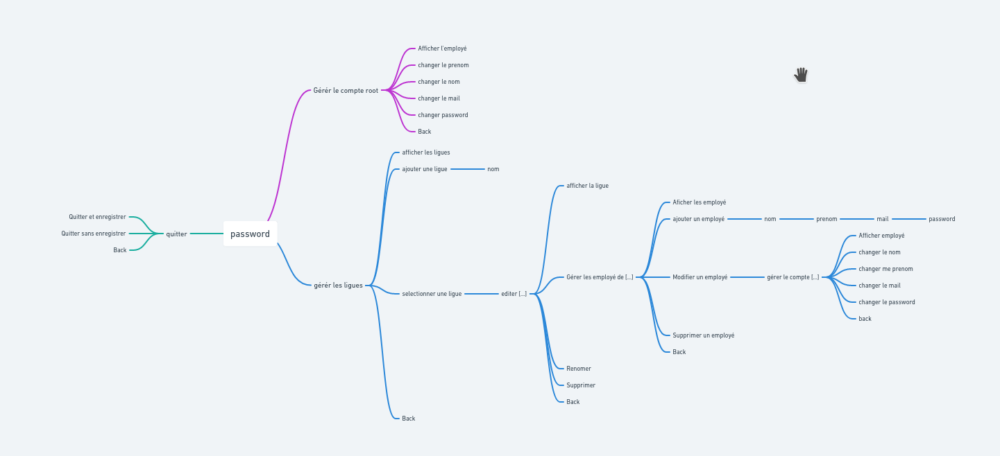

Context
Un des responsables de la M2L, utilise une application pour gérer les employés des ligues.
L’application est mise à votre disposition par le biais des ressources suivantes :
Cette application, très simple, n’existe qu’en ligne de commande et est mono-utilisateur.
Nous souhaiterions désigner un administrateur par ligue et lui confier la tâche de recenser les employés de
sa ligue. Une partie du travail est déjà faite mais vous allez devoir le compléter.
Les niveaux d’habilitation des utilisateurs sont les suivants :
Iteration 1
- Modélisation d’une base de données avec un MCD.
- 
- Vérification du fonctionnement correct de l’application grâce à des tests unitaires.
- Gestion de la date de départ et de celle d’arrivée de chaque employé (couche métier + tests unitaires).
- Représentation des menus du dialogue en ligne de commande avec un arbre heuristique (Utilisez un logiciel de type Freemind).
- 
Iteration 2
- Création de la base de données.
- Gestion des dates dans le dialogue en ligne de commande.
- Dans le dialogue en ligne de commande, un employé doit être selectionné avant que l’on puisse choisir de modifier ou de supprimer.
- Possibilité de changer l’administrateur d’une ligue en ligne de commande.
Iteration 3
- Création d’une classe fille de Passerelle permettant de gérer la connexion à la base de données avec JDBC (ou avec Hibernate si vous le souhaitez).
- Modélisation de l’interface graphique avec des maquettes.
- Possibilité de changer l’administrateur d’une ligue en ligne de commande.
Iteration 4
- Création d’une interface graphique avec JavaFx pour que les administrateurs puissent gérer les ligues.
- Si une ligue n’a pas d’administrateur, c’est automatiquement le root qui devient l’administrateur de la ligue (avec les tests unitaires correspondants).
- Installation de la base de données sur un serveur accessible dans le réseau local de la société.
- Rédaction d’un mode opératoire à l’usage des administrateurs.